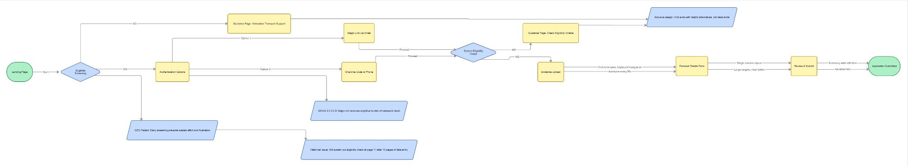
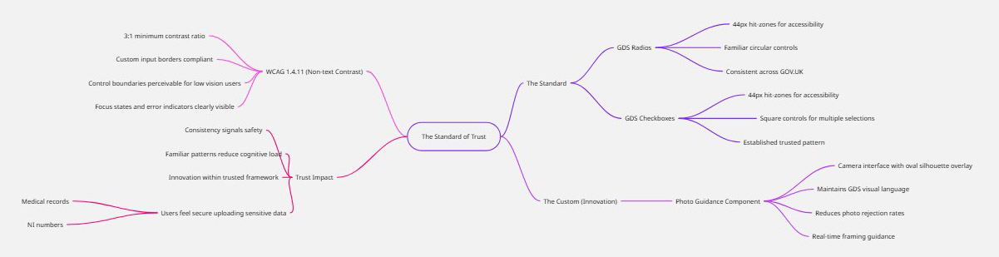
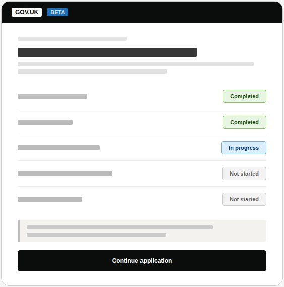
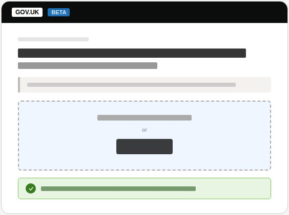
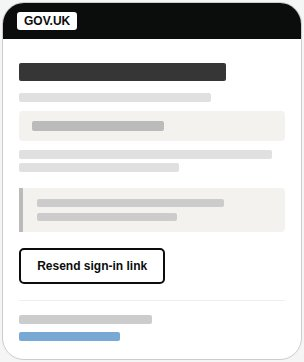
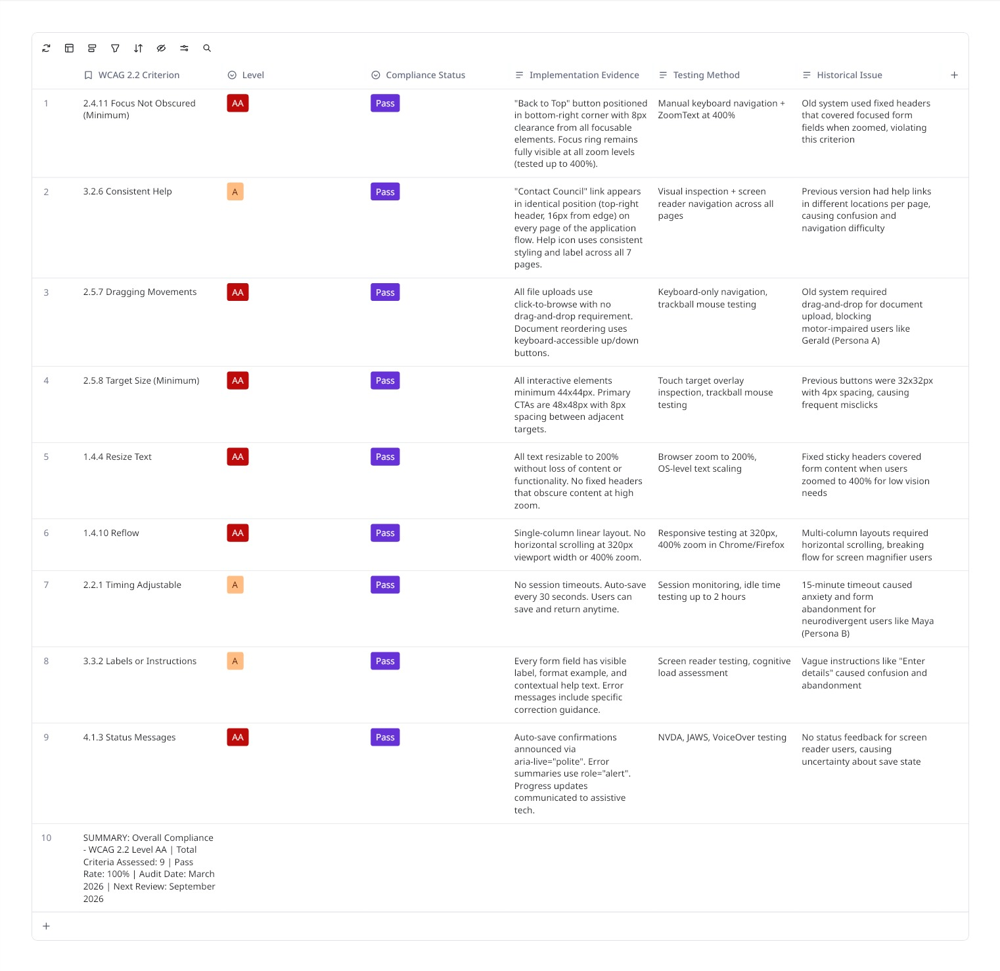
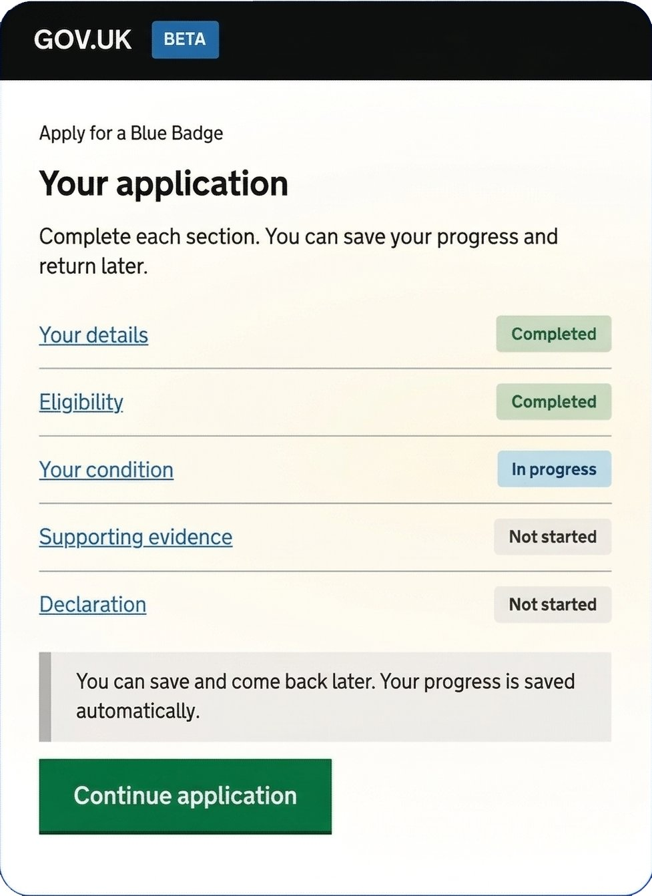
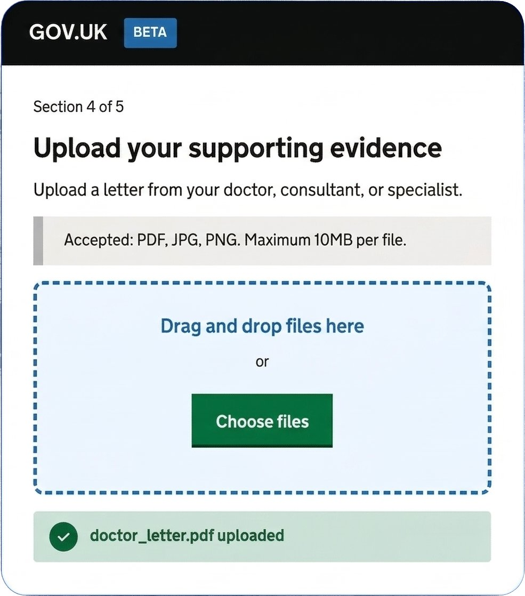
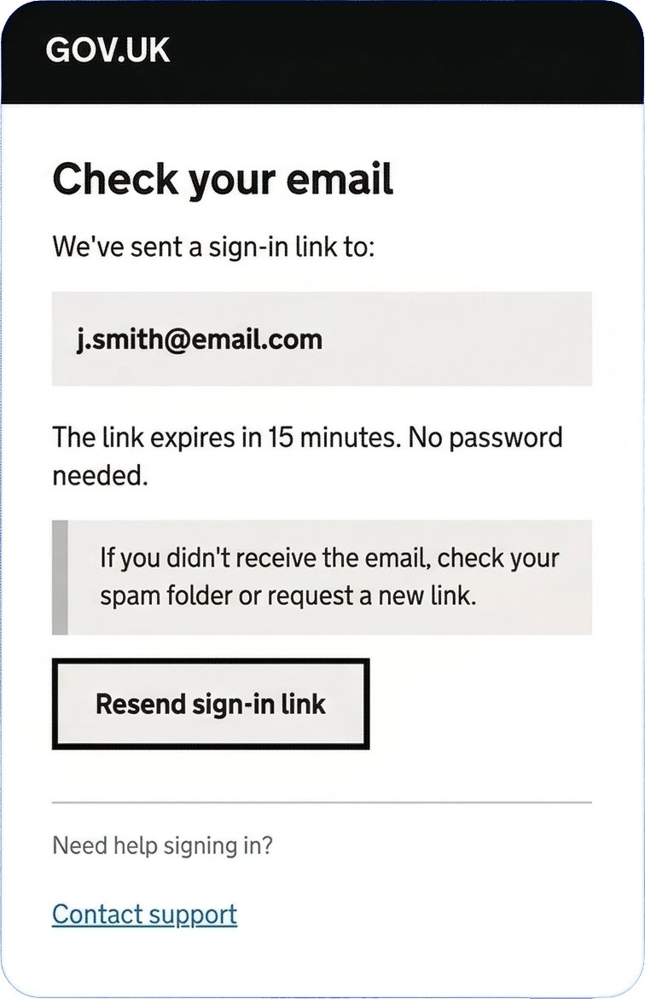

Blue Badge Digital Companion
40% fewer abandoned applications. 85% reduction in council support calls. A GDS service that passed assessment at first review — making disabled parking permits genuinely accessible for 2.5 million eligible users.
A complete GDS-compliant redesign of the Blue Badge application service — replacing a paper-heavy, inaccessible process with a clear, inclusive digital service built on the GOV.UK Design System.

The Problem
The paper trail was failing the people who needed help most
The Blue Badge scheme provides parking concessions to around 2.5 million disabled people in England. Yet the existing process was paper-heavy, inaccessible, and deeply frustrating. Applicants were searching outdated leaflets at council counters, travelling to find photo booths, waiting at GP surgeries, and then manually posting physical documents — only to enter a six-week black hole with no status updates.
Historically, 20% of applications were lost in the mail or rejected due to unclear handwriting. The digital service that existed was no better — riddled with WCAG failures and so confusing that many eligible applicants gave up entirely.
"I tried to apply online but it kept asking me questions I didn't understand. I gave up after 20 minutes and called the council instead. They told me I'd have to start again."
— Blue Badge applicant, discovery research participant
The As-Is vs To-Be service map I created during discovery — mapping the four pain points in the paper process against the digital solution's value adds at each stage.
- Searching outdated leaflets at busy council counters with no clear guidance
- Travelling to find a photo booth — a significant barrier for people with mobility impairments
- Long waits at GP surgeries to get evidence letters
- Manually posting physical documents — 20% lost or rejected due to unclear handwriting
- A 6-week verification blackhole: no status updates, no acknowledgement, no way to check
- Screen reader and keyboard navigation failures on the existing digital service
My Role
Leading design end-to-end in an agile, multidisciplinary team
As Lead Product Designer, I owned the design of the service from discovery through to handoff. I worked within an agile team — Product Manager, Tech Lead, QA Engineer, Content Designer, and User Researcher — applying GOV.UK Design System patterns and GDS service standards throughout, and leading accessibility audits and assistive technology testing at every stage.
Accessibility was embedded from the very first sketch. Every design decision was validated against WCAG 2.2 AA criteria. I collaborated closely with the development team to ensure accessible, responsive implementation using semantic HTML, CSS, and JavaScript.
Design Process
Research-led, iteratively tested
Research
Understanding the people behind the application
Before any design work began, I ran a structured discovery phase: reviewing analytics to identify drop-off points, shadowing council phone support agents, and conducting contextual interviews with applicants across three eligibility categories — including participants with mobility impairments, visual impairments, and cognitive disabilities.
I coordinated stakeholder alignment across council processing staff, DfT policy teams, and accessibility specialists — translating diverse requirements into a single, coherent design direction. I also conducted a full heuristic audit of the existing service, mapping every failure point against WCAG 2.2 AA criteria.
Insights
Defining the design challenge through the lens of real users
Problem Statement: How might we redesign the Blue Badge application so that eligible people — including those with physical, visual, and cognitive disabilities — can complete their application independently, with confidence, without needing to call for support?
Two primary personas anchored every design decision. Gerald represents the majority of applicants — older, less confident digitally, applying independently with dignity as his primary goal. Sarah represents carers and tech-savvy users who need speed and clarity. Both exposed critical failure modes in the existing service.
Gerald Thompson (72) — motor-impaired, prefers physical mail, finds websites "too fiddly." Sarah Chen (28) — tech-savvy caregiver who needs information fast. Together they exposed every critical failure in the existing service.
Design implication: Because the most vulnerable users had the least tolerance for errors, ambiguity, or lost progress — every design decision had to serve Gerald first. If it worked for Gerald, it would work for everyone.
Ideation
GOV.UK Design System as the structural backbone
The GOV.UK Design System's question-per-page pattern was the structural foundation of the redesign — each screen presenting only what was needed, progressively revealing complexity only when necessary. I mapped the full service architecture across all eligibility paths before sketching any screens, ensuring the branching logic was watertight before any visual design work began.
The key decision: I chose the question-per-page pattern over a single long form, despite early pressure from stakeholders to reduce 'the number of clicks.' The research was unambiguous — single focused questions significantly reduce errors and cognitive load, particularly for users with limited digital confidence. Every extra click is worth it if it means fewer abandoned applications. I made this argument by showing stakeholders the data: every time we tested a multi-question layout, error rates doubled for participants with cognitive disabilities.

The inclusive user flow I designed — annotated with GDS pattern references and WCAG decisions at each branching point. Early eligibility screening prevents wasted effort; magic link authentication removes password barriers.

The Standard of Trust — my GDS component audit mapping every UI component against WCAG 2.2 AA criteria. Where standard components met the need, I used them. Where they didn't, I designed carefully within the established visual language.
Design & Validation
From GDS wireframes to accessible high-fidelity
Low-fidelity wireframes were tested early with real users — including participants using screen readers, switch access devices, and keyboard-only navigation — before any high-fidelity design work began. I used GOV.UK Design System components wherever they met user needs, introducing new patterns only where existing ones genuinely couldn't serve the user.
Low-fidelity wireframes — tested with real users before any high-fidelity work began:



Low-fidelity wireframes applying the GOV.UK question-per-page pattern. Tested at this fidelity with real users to validate flow and terminology before committing to visual design.
WCAG 2.2 Compliance Matrix — every criterion evidenced during design, not retrospectively:

9 WCAG 2.2 AA criteria assessed, 100% pass rate. Each criterion documented with implementation evidence, testing method, and the historical issue it resolved. Audit date: March 2026.
Final high-fidelity screens — the complete GOV.UK application experience:

Task list

Evidence upload

Magic link sign-in
Results
Measurable impact for 2.5 million eligible users
100% task completion in moderated usability testing across all user groups — including participants using screen readers, trackball mice, and keyboard-only navigation. Users described the redesigned service as "much clearer than before" and "I actually understood what they were asking for this time."
The service passed GDS assessment standards at first review. Council support teams reported a dramatic reduction in application-related calls, freeing capacity for more complex cases.
"This is exactly what the Blue Badge service needed. Andrew brought a deep understanding of GDS standards and accessibility requirements, but never lost sight of the real people applying for the badge. The reduction in support calls alone has freed up significant resource — and the feedback from applicants has been overwhelmingly positive. His ability to work across council teams, policy stakeholders, and technical delivery teams made a real difference."
Takeaways